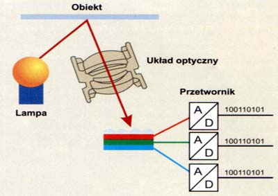

Urządzenia wejścia
Skaner | Aparat cyfrowy
Skaner
Przekształca optyczne informacje na komputerowe dane; za pomocą czujników
bada kolor i jasność odczytywanego obrazu; po przekazaniu informacji o o
brazie do komputera można je w dowony sposób modyfikować.
Parametry skanera:
- wielkość obszaru skanowania;
-
rozdzielczość optyczna (mierzona w DPI) - gęstość elementów
światłoczułych na liswie przesuwanej nad kanowaną ilustracją; im jest
ich więcej, tym więcej szczegółów jest w stanie wychwycić; rozdzielczość
podawana jest w postaci dwóch licz (np. 300x600 dpi.); pierwsza z nich
odnosi się do liczby elementów tworzy jeden piksel informacji w osi
poziomej; druga liczba oznacza odległość (lub krok), o jaką ramię
przesuwa się pomiędzy ekspozycjami. Liczba 600 dpi oznacza więc że każda
nowa próbka jest tworzona co 1/600 cala;
-
głębia kolorów - ile bitów informacji potrzebnych jest do opisania
koloru punktu w standardzie RGB - im większa jest to liczba, tym więcej
kolorów skanera potrafi rozróżnić, np.:
| GŁĘBIA [bit] |
ILOŚĆ KOLORÓW |
| 1 |
2 |
| 8 |
256 |
| 16 |
65 536 |
| 24 |
16 777 216 |
-
rozdzielczość interpolowana - umiejętność sztucznego podwyższania
rodzielczości otrzymywanego obrazu cyfrowego; między wczytane punkty
obrazu wstawiane są kolejne, których jedność i kolor wyliczone są przez
program na podstawie wartości punktów sąsiednich, zwiększanie
rozdzielczości interpolowanej zwiększa wielkość ilustracji, lecz obraz
nie zawiera przez to więcej szczegółów.

Aparat cyfrowy
Nie potrzebuje filmu fotograficznego; docierający do niego obraz trafia na
matrycę LCD lub CMOS, gdzie jest przetwarzany i zapisywany w postaci
cyfrowej (zazwyczaj na karcie pamięci Flash).
Najważniejsze parametry:
- rozdzielczość ( wielkość matrycy);
- technologia CCD lub CMOS;
- zoom optyczny i cyfrowy.